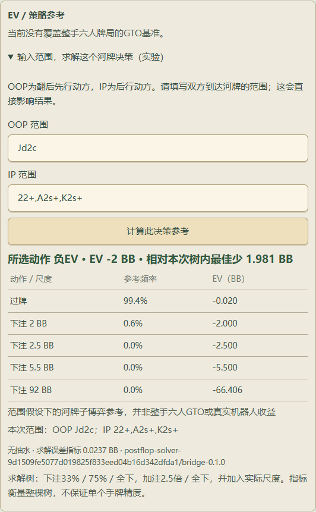

有连续性的牌桌
你与 5 位机器人同桌。0.5 / 1 BB、无抽水；完成目标后，可在当前训练组追加 1–1000 手，保留筹码、轮换与公开行为观察。
从这一手，接着练本地训练原型 · PRODUCT CASE STUDY
从坐上牌桌，到看懂自己的选择。
一款围绕连续训练、清晰行动与逐步复盘打磨的
德州扑克训练原型。
如果训练的重点，
从「赢了多少」变成「这一手发生了什么」？
01 / THE EXPERIENCE
把行动前的局面与行动后的结果连起来，
让复盘成为训练的一部分。
你与 5 位机器人同桌。0.5 / 1 BB、无抽水；完成目标后，可在当前训练组追加 1–1000 手，保留筹码、轮换与公开行为观察。
从这一手，接着练弃牌、跟注、加注至与全下，保留明确文字状态。结算同时展示投入与收回，让底池与净收益各有位置。
金额有来处，结果可核对按训练组和手数找到已保存牌局，再按街、按行动回看。每个节点只展示当时已发出的公共牌。
从记得结果，到看懂过程02 / TRY THE REPLAY
下方是固定脚本演示，可点击切换步骤。
不运行游戏引擎、机器人或求解器。
公共牌尚未发出
DECISION TIMELINE
行动前底池为 1.5 BB，你持 J♦ 2♣，本手起始筹码为 106 BB。
03 / UNDER THE SURFACE
从规则正确性到信息边界，
让每一项产品能力都有对应的验证。
原型的重点，是把规则、状态与复盘连成一个可检查的过程。陪练使用公开范围启发式；可选 Fullhouse 模型仅在本地配置可用时加载。
处理短码盲注、不完整全下的加注权、多边池分配与余码。投入、底池与收回，必须能够对得上。
机器人与推荐策略不接收其他玩家的实际隐藏底牌，也不接收未来公共牌。逐步复盘跟随节点揭示牌面。
追加手数延续当前运行中的训练组；重启后仍可查找已保存牌谱。同手数的跨组记录用组标识区分。
当前开发版本的工程验证快照。
证明已检查的行为，不代表机器人棋力。
04 / A CAREFUL NEXT STEP
实验能力本地开发版已接入真实开源 postflop-solver ↗。在仅剩两位玩家、英雄首次河牌决策的局面中，手动输入双方范围后，计算有限行动树内的策略参考。
这是局部、实验性的参考。六人整局 GTO、自动范围推断与可靠棋力评估仍未完成。本展示页不执行求解。

05 / WHERE IT STANDS
六人现金桌、明确行动状态、结算明细、同组续玩、全部已保存牌谱查找及逐步回放。
真实开源引擎、用户指定范围与有限树；仅覆盖符合条件的首次英雄河牌决策。
可靠的范围来源、更多翻前及翻后局面、多人参考，以及独立的机器人对抗评估。
FROM PLAY TO UNDERSTANDING
这是一个持续打磨的本地训练原型。
这里公开展示产品体验、交互思路与工程边界。